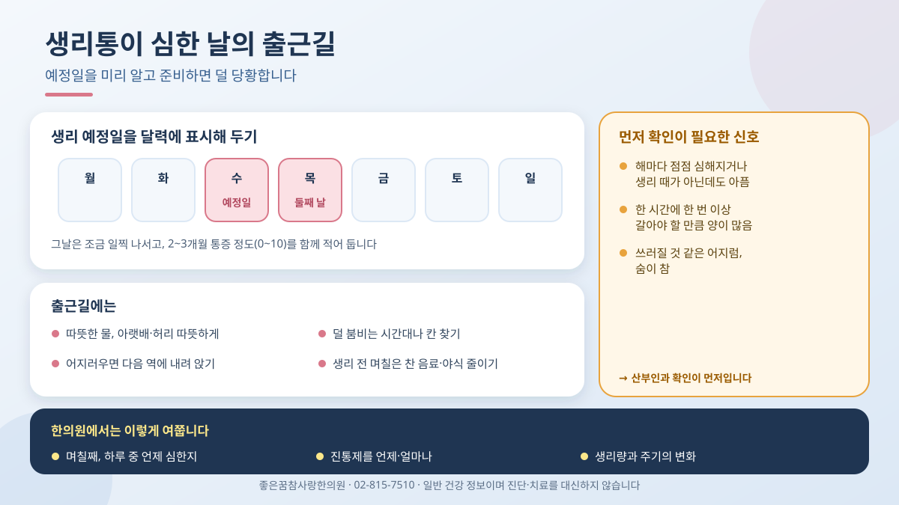

이종호 한의사 감수좋은꿈참사랑한의원 대표원장 (한의사 면허번호 19769)발행 2026-11-24 · 수정 2026-11-26
이 글의 차례
- 왜 이런 불편이 생길 수 있나요
- 왜 서 있을 때 유난히 더 힘들까요
- 생리통의 모양에 따라 살피는 점이 다릅니다
- 먼저 이렇게 여쭙니다
- 상황별 예시
- 스스로 점검해 보세요
- 일상에서 먼저 해 볼 수 있는 것
- 출근 전날 밤과 아침에는 이렇게 준비해 보세요
- 지하철 안에서는 이렇게 버텨 보세요
- 생리 전 일주일 생활도 함께 살펴보세요
- 환승역 계단과 회사에 도착한 뒤에는요
- 생리통과 잠은 서로 맞물려 있습니다
- 몸의 냉기는 이렇게 살펴보세요
- 진통제는 어떻게 기록해 두면 좋을까요
- 생리 기간 식사는 이렇게 챙겨 보세요
- 생리 기간에 운동은 쉬어야 하나요?
- 한의원에서 함께 살필 수 있는 경우
- 얼마나 지켜보고 언제 상담할까요
- 이렇게 기록해 오시면 상담이 쉬워집니다
- 이런 증상은 먼저 확인이 필요합니다
생리통이 심한 날 출근길이 걱정된다면, 예정일을 달력에 표시해 그날은 조금 일찍 나서고 아랫배와 허리를 따뜻하게 하며, 어지러우면 참지 말고 다음 역에서 내려 쉬는 것부터 준비해 두시길 권합니다.
생리 첫날 아침, 사람으로 꽉 찬 지하철 안에서 손잡이를 붙잡고 식은땀을 흘려 본 분이라면 그 몇 정거장이 얼마나 길게 느껴지는지 아실 겁니다. 매달 오는 일이라 참고 넘기기 쉽지만, 준비를 조금만 해 두어도 그 아침이 한결 덜 버겁습니다.
왜 이런 불편이 생길 수 있나요
- 생리 초기에는 자궁이 수축하며 아랫배와 허리에 통증이 생길 수 있습니다.
- 붐비는 차 안에 오래 서 있으면 어지럼이나 식은땀이 함께 올 수 있습니다.
- 몸이 차거나 잠이 부족하면 통증을 더 크게 느끼는 분이 많습니다.
- 자궁내막증처럼 자궁의 상태 때문에 생리통이 심해지는 경우도 있어, 필요하면 산부인과 검사를 함께 받아 보시길 권합니다.
왜 서 있을 때 유난히 더 힘들까요
생리 초기에는 자궁을 수축시키는 물질이 많아지면서 아랫배가 조이듯 아프고, 이 물질이 장에도 영향을 주어 설사나 속 울렁거림이 함께 오기도 합니다. 몸이 통증에 반응하느라 긴장해 있는 상태입니다.
이때 오래 서 있으면 피가 다리 쪽으로 몰리고, 붐비는 차 안의 더운 공기까지 더해지면 머리 쪽으로 가는 혈액이 잠깐 부족해질 수 있습니다. 눈앞이 아득해지거나 식은땀이 나는 느낌이 이렇게 생기기 쉽습니다.
빈속이거나 전날 잠을 설쳤다면 몸이 버틸 여유가 더 줄어듭니다. 그래서 같은 통증이라도 아침을 먹고 잠을 잘 잔 달보다 그렇지 않은 달에 지하철에서 더 힘들게 느껴지는 분이 많습니다.
생리통의 모양에 따라 살피는 점이 다릅니다
- 아랫배가 쥐어짜듯 아프고 몸을 웅크리면 조금 편해지는 경우에는 생리 첫날과 둘째 날의 생활 리듬을 자세히 여쭙습니다.
- 아랫배가 차고 묵직하며 따뜻하게 하면 덜한 경우에는 몸의 냉기와 평소 손발의 온도를 함께 봅니다.
- 허리와 엉덩이, 허벅지 안쪽까지 뻐근한 경우에는 앉고 서는 자세와 골반 주변의 긴장도 살핍니다.
- 통증과 함께 설사나 속 울렁거림이 오는 경우에는 그날의 식사와 장의 리듬을 이어서 여쭙니다.
- 생리 전부터 머리가 아프고 몸이 붓는 경우에는 생리 전 일주일의 잠과 짠 음식, 긴장을 함께 봅니다.
먼저 이렇게 여쭙니다
- 생리통이 주로 생리 며칠째, 하루 중 언제 심한가요?
- 진통제는 언제, 얼마나 드시나요?
- 생리량이 많아 자주 갈아야 하거나 덩어리가 나오나요?
- 통증과 함께 어지럼, 설사, 두통이 있나요?
- 생리 주기는 규칙적인 편인가요?
- 출근길은 몇 분 정도 걸리고, 서서 가는 시간이 얼마나 되나요?
- 생리 첫날 아침에는 보통 무엇을 드시고 나오나요?
상황별 예시
- 예를 들어 출근 시간이 이른 데다 생리 첫날 늦잠까지 자서 빈속으로 뛰어나온 경우, 환승역 계단을 서둘러 오른 뒤 차 안에서 눈앞이 아득해질 수 있습니다. 전날 밤 따뜻하게 데워 먹을 수 있는 것을 준비해 두고, 그날은 몇 분 일찍 나서 계단을 천천히 오르시길 권합니다.
- 예를 들어 사무실에서 하루 종일 앉아 일하다 퇴근길에 서서 오는 경우, 저녁이 되면 허리와 아랫배가 함께 묵직해지기도 합니다. 오후에 한 시간에 한 번은 자리에서 일어나 몇 걸음 걷고, 퇴근 전 따뜻한 차를 한 잔 마셔 보세요.
- 예를 들어 생리 기간에도 찬 음료를 습관처럼 마시는 경우, 배가 차가워지면서 통증이 더 또렷하게 느껴진다는 분이 많습니다. 생리 전 며칠부터는 미지근하거나 따뜻한 음료로 바꿔 보세요.
- 예를 들어 퇴근 뒤 운동을 하는 습관이 있어 생리 첫날에도 평소처럼 강하게 운동한 경우, 그날 밤 아랫배와 허리 뻐근함이 더 오래가기도 합니다. 첫날과 둘째 날은 가볍게 걷는 정도로 바꿔 보세요.
- 예를 들어 생리통 때문에 매달 하루 이틀 업무에 집중하기 어려운 경우, 혼자 참기보다 그날 일정을 조금 가볍게 잡을 수 있는지 미리 살펴 두는 것도 몸을 돌보는 방법입니다.
스스로 점검해 보세요
- 생리 예정일을 따로 적어 두지 않아 갑자기 시작되는 달이 많다
- 생리 첫날에도 아침을 거르고 나온다
- 생리 기간에도 찬 음료와 아이스커피를 즐긴다
- 생리 전 며칠은 잠드는 시간이 늦어진다
- 진통제를 먹는 날이 한 주기에 사흘을 넘는다
- 지하철에서 어지러웠던 적이 한 번 이상 있다
- 평소 손발이 차고 아랫배가 서늘하다는 말을 자주 한다
- 생리 전 일주일 동안 짠 음식과 단 간식이 부쩍 당긴다
해당하는 항목이 많다면 출근 전 준비와 생리 전 생활부터 조금씩 바꿔 볼 신호입니다.
일상에서 먼저 해 볼 수 있는 것
- 생리 예정일을 달력에 표시하고 그날은 조금 일찍 나서기
- 아침에 따뜻한 물을 마시고 아랫배와 허리를 따뜻하게 하기
- 가능하면 덜 붐비는 시간대나 칸을 찾아 타기
- 어지러우면 참지 말고 다음 역에 내려 앉아서 쉬기
- 생리 전 며칠은 찬 음료와 늦은 야식 줄이기
출근 전날 밤과 아침에는 이렇게 준비해 보세요
생리 예정일 하루 이틀 전에는 평소보다 30분 일찍 잠자리에 들어 보세요. 잠이 부족하면 통증을 더 예민하게 느끼는 분이 많아, 전날 밤 잠이 그다음 날 아침을 꽤 좌우합니다.
가방에는 생리대와 함께 작은 물병, 사탕이나 견과류처럼 바로 먹을 수 있는 간식을 넣어 두세요. 아침을 먹지 못하고 나온 날 차 안에서 어지러울 때 조금 도움이 됩니다.
옷은 허리를 조이지 않는 편한 바지나 치마로 고르고, 겨울에는 아랫배와 허리를 덮는 내의나 복대로 따뜻하게 해 보세요. 진통제를 드시는 분은 언제 먹을지 미리 약사와 상의해 두시면 출근길이 덜 불안합니다.
지하철 안에서는 이렇게 버텨 보세요
탈 때는 가능하면 문 옆이나 기둥 근처처럼 몸을 기댈 수 있는 자리를 찾으세요. 두 발을 어깨너비로 벌리고 무릎을 살짝 굽히면 몸의 흔들림이 줄어 버티기가 조금 쉬워집니다.
숨을 길게 내쉬며 어깨 힘을 빼 보세요. 통증이 올라올 때 숨을 참는 분이 많은데, 내쉬는 숨을 길게 하면 몸의 긴장이 조금 풀립니다.
눈앞이 아득하거나 식은땀이 나기 시작하면 다음 역에서 내려 의자에 앉으세요. 지각이 걱정되어 참다가 더 힘들어지는 경우가 많아, 미리 회사에 늦을 수 있다고 연락할 방법을 정해 두면 마음이 덜 급합니다.
생리 전 일주일 생활도 함께 살펴보세요
생리 전 일주일은 짠 음식과 단 간식이 당기기 쉬운 시기입니다. 국물과 과자를 조금 줄이고 따뜻한 밥과 채소, 단백질을 챙기면 몸이 덜 붓고 무겁다는 분이 많습니다.
커피는 하루 한두 잔 정도로 줄이고 오후 늦게는 피해 보세요. 카페인이 잠을 얕게 만들면 생리 첫날 아침이 더 힘들 수 있습니다.
가벼운 걷기나 스트레칭은 생리 전에도 도움이 됩니다. 저녁에 10~20분 걸으며 골반 주변을 풀어 두면 다음 날 아침 몸이 덜 굳는다는 분이 많습니다.
환승역 계단과 회사에 도착한 뒤에는요
환승역 긴 계단은 생리 첫날에 특히 힘든 구간입니다. 사람 흐름에 밀려 빠르게 오르기보다 난간 쪽으로 붙어 한 칸씩 천천히 오르거나, 에스컬레이터와 엘리베이터가 있는 출구를 미리 알아 두세요.
회사에 도착하면 바로 자리에 앉아 일을 시작하기 전에 따뜻한 물을 한 잔 마시고 화장실을 다녀오세요. 출근길 내내 긴장했던 몸을 5분이라도 풀어 주면 오전 통증이 덜 거칠게 느껴진다는 분이 많습니다.
의자에 앉을 때는 허리 뒤에 작은 쿠션을 받치고, 무릎 담요로 아랫배와 허벅지를 덮어 두세요. 사무실 냉방이나 바닥의 찬 공기가 생각보다 몸을 차게 만듭니다.
점심은 차고 매운 음식보다 따뜻한 국물이나 밥을 고르시길 권합니다. 오후에 한 번은 자리에서 일어나 복도를 몇 걸음 걸으며 골반 주변을 풀어 주세요.
생리통과 잠은 서로 맞물려 있습니다
생리 전 며칠은 잠이 얕아지고 자주 깨는 분이 많습니다. 몸의 호르몬 흐름이 바뀌는 시기라 체온과 잠의 리듬도 함께 흔들리기 쉽습니다.
잠이 부족한 채로 생리 첫날을 맞으면 통증을 더 예민하게 느끼고, 아침에 일어나는 것도 힘들어 서둘러 나서게 됩니다. 서두르는 아침이 다시 지하철의 어지럼으로 이어지는 흐름이 생기기 쉽습니다.
그래서 저는 생리통으로 오신 분께 생리 전 일주일의 잠드는 시각과 깨는 횟수를 꼭 여쭙습니다. 잠의 흐름이 조금 안정되면 생리 첫날 아침이 덜 버겁다는 분이 많습니다.
몸의 냉기는 이렇게 살펴보세요
평소 손발이 차고 겨울이면 아랫배가 서늘하다는 분은 생리 때 통증이 더 또렷한 경우가 많습니다. 아랫배에 손바닥을 대 보았을 때 다른 곳보다 차갑게 느껴지는지 한번 확인해 보세요.
이런 분은 맨발로 찬 바닥을 걷는 습관, 짧은 상의로 허리가 드러나는 옷차림, 차가운 음료를 하루 여러 잔 마시는 습관부터 줄여 보시길 권합니다. 따뜻한 물로 발을 데우고 자는 것도 도움이 됩니다.
진통제는 어떻게 기록해 두면 좋을까요
진통제를 드시는 것 자체를 걱정하실 필요는 없습니다. 다만 몇 시에 먹었는지, 먹고 나서 얼마 만에 통증이 덜해졌는지, 한 주기에 몇 번 먹었는지를 적어 두면 내 생리통의 흐름이 눈에 보입니다.
몇 달 기록을 모아 보면 통증이 시작되는 시각이 비슷하다는 것을 알게 되는 분이 많습니다. 그러면 약사와 상의해 복용 시기를 맞추거나, 그 시간에 맞춰 출근길을 조정하는 데도 도움이 됩니다.
진료 때 이 기록을 보여 주시면 진통제와 생활 리듬을 함께 놓고 살필 수 있습니다. 처방받은 약은 처방한 의사와 상의 없이 바꾸지 마시고, 드시는 그대로 알려 주시면 됩니다.
생리 기간 식사는 이렇게 챙겨 보세요
생리 첫날에는 입맛이 없어 끼니를 거르기 쉽지만, 빈속은 어지럼을 부르기 쉽습니다. 죽이나 따뜻한 국에 밥을 조금 말아 먹는 것처럼 부담이 적은 식사라도 챙겨 보세요.
생리 기간에는 철분이 빠져나가는 만큼 살코기, 달걀, 두부, 푸른 채소를 평소보다 조금 더 챙기시길 권합니다. 기름지고 매운 배달 음식은 속을 더 불편하게 만들 수 있어 이 기간에는 잠시 줄여 보세요.
생리 기간에 운동은 쉬어야 하나요?
통증이 심한 첫날과 둘째 날에는 숨이 찰 만큼 강한 운동보다 가볍게 걷기나 누워서 하는 스트레칭 정도가 몸에 부담이 덜합니다. 무릎을 가슴 쪽으로 천천히 끌어안고 숨을 내쉬는 동작을 몇 번 해 보세요.
통증이 덜해지는 셋째 날 무렵부터는 평소 하던 운동을 조금씩 이어 가셔도 괜찮은 분이 많습니다. 몸이 보내는 신호를 보며 강도를 맞추시면 됩니다.
한의원에서 함께 살필 수 있는 경우
- 생리통이 매달 일상에 지장을 줄 만큼 반복되는 경우 주기와 몸의 냉기, 생활 리듬을 함께 살핍니다.
- 생리 전후 붓기, 피로, 잠의 변화가 함께 있는 경우 몸의 흐름을 함께 살핍니다.
- 진통제를 자주 드시는 경우 드시는 양과 시기를 함께 여쭙니다.
좋은꿈참사랑한의원에서는 모든 분께 맥부터 짚으며 생리 주기와 통증이 심한 날, 생리량과 진통제 복용을 여쭙고, 설진·복진도 필요에 따라 더해 몸의 냉기와 흐름을 살핍니다. 그 뒤 침이나 한약 상담 등 그날 필요한 방법을 정합니다.
한약을 상담할 때는 지금 드시는 약과 영양제를 먼저 확인합니다. 임신 계획이 있거나 임신 가능성이 있다면 먼저 말씀해 주시고, 산부인과 진료도 함께 상의해 주세요. 다시 오시면 지난 주기의 통증 기록과 출근길이 어땠는지부터 이어서 여쭙습니다.
침이 처음이거나 무서우시면 미리 말씀해 주세요. 침의 개수보다 지금 몸에 맞는 자리와 자극량을 고르고, 무엇을 왜 하는지 먼저 설명드린 뒤 진행합니다. 생리 중에 오셔도 괜찮으니 그날의 통증과 생리량을 편하게 알려 주세요.
얼마나 지켜보고 언제 상담할까요
- 출근 전 준비와 생리 전 생활을 바꾼 뒤 2~3주기 동안 통증 정도와 진통제 횟수를 적으며 지켜보세요.
- 준비를 해도 매달 출근길이 힘들 만큼 통증이 이어지거나, 진통제를 먹는 날이 점점 늘어난다면 상담을 권합니다.
- 산부인과 검사를 받은 적이 없다면 한 번쯤 확인해 두시는 것도 마음을 놓는 데 도움이 됩니다.
- 통증이 조금 가벼워졌다면 어떤 준비가 도움이 되었는지 기록에 표시해 두세요. 다음 달에도 같은 준비를 되풀이하기가 쉬워집니다.
- 생리 주기가 들쑥날쑥해 예정일을 짐작하기 어렵다면, 주기 자체도 진료 때 함께 살펴봅니다.
이렇게 기록해 오시면 상담이 쉬워집니다
- 2~3개월 동안의 생리 시작일과 통증 정도(0~10)
- 진통제를 먹은 시각과 횟수
- 생리량의 변화
- 함께 오는 증상(어지럼, 설사, 두통)
- 생리 첫날 아침에 먹은 것과 전날 잠든 시각
- 출근길에 힘들었던 구간(환승 계단, 차 안 등)
이런 증상은 먼저 확인이 필요합니다
- 생리통이 해마다 점점 심해지거나, 생리 기간이 아닐 때도 아랫배가 아픈 경우
- 생리량이 갑자기 많아져 한 시간에 한 번 이상 갈아야 하는 경우
이런 신호가 있으면 한의원보다 가까운 병원이나 응급실을 먼저 찾으세요.

여쭙는 것
- 생리통이 주로 생리 며칠째, 하루 중 언제 심한가요?
- 진통제는 언제, 얼마나 드시나요?
- 생리량이 많아 자주 갈아야 하거나 덩어리가 나오나요?
생활에서 해 볼 것
- 생리 예정일을 달력에 표시하고 그날은 조금 일찍 나서기
- 아침에 따뜻한 물을 마시고 아랫배와 허리를 따뜻하게 하기
- 가능하면 덜 붐비는 시간대나 칸을 찾아 타기
한의원에서 함께 살필 것
- 생리통이 매달 일상에 지장을 줄 만큼 반복되는 경우 주기와 몸의 냉기, 생활 리듬을…
- 생리 전후 붓기, 피로, 잠의 변화가 함께 있는 경우 몸의 흐름을 함께 살핍니다.
- 진통제를 자주 드시는 경우 드시는 양과 시기를 함께 여쭙니다.
먼저 확인이 필요한 신호
- 생리통이 해마다 점점 심해지거나, 생리 기간이 아닐 때도 아랫배가 아픈 경우
- 생리량이 갑자기 많아져 한 시간에 한 번 이상 갈아야 하는 경우
한눈에 보는 표
| 구분 | 핵심 |
|---|---|
| 여쭙는 것 | 생리통이 주로 생리 며칠째, 하루 중 언제 심한가요? 진통제는 언제, 얼마나 드시나요? |
| 생활에서 해 볼 것 | 생리 예정일을 달력에 표시하고 그날은 조금 일찍 나서기 아침에 따뜻한 물을 마시고 아랫배와 허리를 따뜻하게 하기 |
| 한의원에서 함께 살필 것 | 생리통이 매달 일상에 지장을 줄 만큼 반복되는 경우 주기와 몸의 냉기, 생활 리듬을 함께 살핍니다. 생리 전후 붓기, 피로, 잠의 변화가 함께 있는 경우 몸의 흐름을 함께 살핍니다. |
| 먼저 확인이 필요한 신호 | 생리통이 해마다 점점 심해지거나, 생리 기간이 아닐 때도 아랫배가 아픈 경우 생리량이 갑자기 많아져 한 시간에 한 번 이상 갈아야 하는 경우 |
자주 묻는 질문
진통제를 미리 먹어도 되나요?
복용 시기는 약사나 처방한 의사와 상의해 주세요. 드시는 약은 진료 때 알려 주시면 함께 고려합니다.
생리통이 있으면 초음파 검사를 꼭 받아야 하나요?
모든 생리통에 꼭 필요한 것은 아니지만, 통증이 점점 심해지거나 위의 확인 신호가 있으면 산부인과 검사를 권합니다.
생리 중에도 진료받을 수 있나요?
네. 생리 중인지 알려 주시면 진찰 방법을 그에 맞춰 조절합니다.
회사에서 생리통이 심해지면 어떻게 하나요?
잠시 앉아 쉬며 아랫배와 허리를 따뜻하게 하고, 통증이 평소와 다르게 심하거나 어지럼이 크면 무리하지 말고 진료를 받으세요.
핫팩을 붙이고 출근해도 괜찮나요?
아랫배와 허리를 따뜻하게 하는 데 도움이 될 수 있지만, 피부에 직접 오래 붙이면 저온 화상이 생길 수 있어 옷 위에 붙이고 뜨거우면 바로 떼어 주세요.
좋은꿈참사랑한의원은 재진 때 지난번 이야기부터 이어서 여쭙니다. 진료시간과 예약은 오시는 길에서 확인하세요.
어디서 상담받을 수 있나요?
좋은꿈참사랑한의원은 서울 동작구 만양로2길 2 신성빌딩 3층·5층(서울 동작구 상도동, 7호선 상도역 3번 출구 근처)에 있습니다. 한의사 3명(이종호 대표원장, 조영기 수석진료원장, 정원영 진료원장)이 진료합니다. 진료시간은 평일 09:30~20:00(점심 13:00~14:00), 토·일·공휴일 09:30~15:00이며, 방문 전 전화로 확인을 권합니다. 예약은 네이버 예약, 카카오톡 상담, 전화 02-815-7510로 받습니다.
이 글은 일반적인 건강 정보이며 개인의 진단이나 치료를 대신하지 않습니다. 증상이 있거나 복용 중인 약이 있다면 진료를 통해 확인하세요. 치료 효과는 개인마다 다를 수 있습니다.
작성 기준: 일반적으로 알려져 있는 건강 정보를 참고해 정리했습니다(대표원장 감수). 증상 기록은 1~2주 동안 하루 1회, 비슷한 시간에 적어 오시면 지난 상태와 비교하기 쉽습니다.